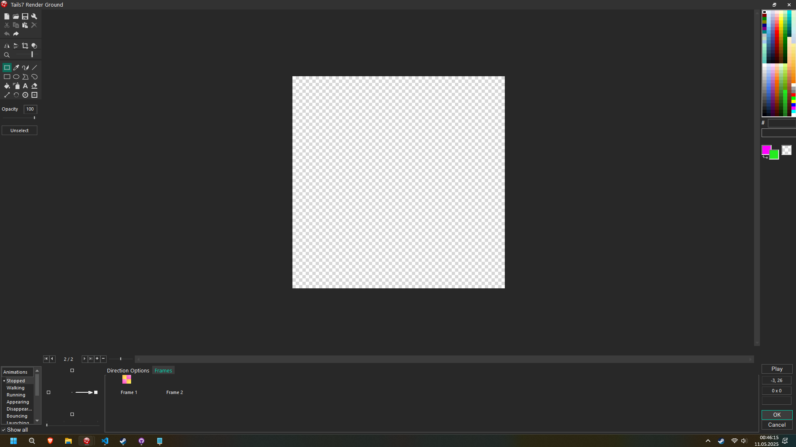

Ground Texture Swapping
Tu dowiesz się jak zmieniać teksturę obiektu 
Tails7 Render Ground
Tails7 jest zaprojektowany by bardzo łatwo zmieniać teksturę.
Pierwszym krokiem jest wybranie naszego Tails7 Render Ground i otwieramy okno edycji tekstur.

Powinno to wyglądać tak:

Wybieramy opcje do stworzenia nowej klatki animacji.

Tu wklejam przykładową teksturę trawy. Ustawiam tu punkt Hot Spot by był wycentrowany gdyż jest to potrzebne.
Przechodzę do Event Editor i tworze takie wydarzenie która mi umożliwi zmienianie tekstury, czemu 1 a nie 2 dla _TextureID? Index tekstur rozpoczyna się od 0 a nie od 1.

Po uruchomieniu projektu mam zmienioną teksturę: